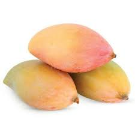
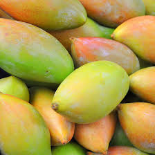

Introduction
Totapuri mango is a popular mango variety in India, known for its unique shape and tangy-sweet taste. It is widely used for juices, pulp production, and processing industries.
Origin
Totapuri mango is mainly grown in Karnataka, Andhra Pradesh, and Tamil Nadu. Its pointed end looks like a parrot’s beak, which is why it is called Totapuri.
Taste & Texture
Totapuri mangoes have a mild sweet taste with a little sourness. The pulp is firm, juicy, and less fibrous compared to many other varieties.
Uses
• Fresh eating
• Mango juice production
• Pickles
• Pulp processing
• Ice creams and desserts
Health Benefits
• Rich in Vitamin C
• Helps digestion
• Supports immunity
• Good for skin health
Season
Totapuri mangoes are available from May to July.
⬅ Back to Home